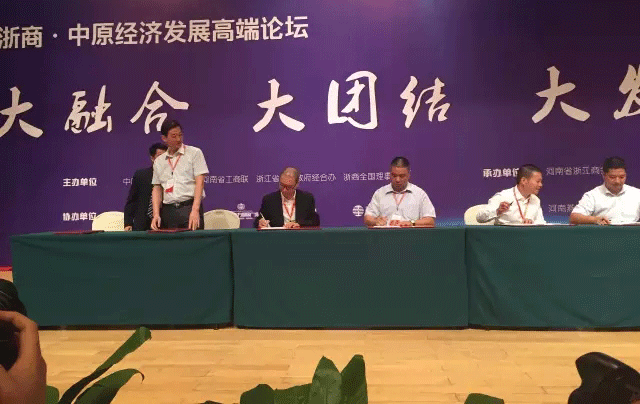
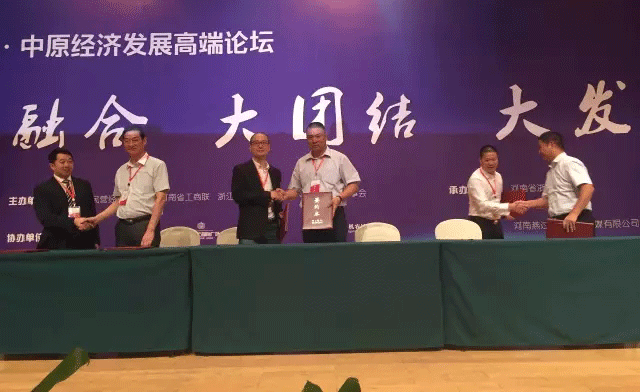

挑货网与浙江商会、建设银行、中原银行举行战略合作签约仪式
2015年8月12日
9月26日上午浙商-中原经济发展高端论坛在郑州黄河迎宾馆隆重举行，全国人大原副委员长蒋正华、河南省政协副主席、河南省工商联主席、河南总商会会长梁静女士、浙江省经合办副主任郑宪宏等领导出席大会。 本届大会河南省浙江商会会长朱建峰先生为了推动在新时代、新形势下浙商在豫企业更好的发展，积极响应李克强总理在十二届全国人大三次会议上提出的“互联网+”战略，大会现场挑货网、浙江商会、中原银行、郑州银行举行了隆重的签约仪式，共同助力传统企业转型，贯彻落实“互联网+”行动计划，挑货网董事长兼CEO吴仁游先生代表挑货网公司出席签约仪式。 本次的签约仪式同时也吹响了挑货网进军中原市场的号角，挑货网将全面服务于河南省浙江商会5000余家会员企业，打通线上线下，推动传统实体行业转型，帮助实体企业互联网化。 店家助手--是挑货网专门为实体店转型而打造的O2O应用工具，全国首创以实体门店为基点融合互联网及移动互联网，击穿线上线下，数据同步，库存打通、会员打通、价格打通、积分打通、支付打通等等。无论是小到几平米的小店还是大型城市综合体，均可轻松实现互联网化。 全国实体店铺目前超过8000万家，平均每个省超过200万家，每个市/县超过2万家，对O2O的旺盛需求正在等待被满足，一个万亿级的市场召唤你来掘金！
